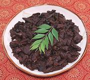

|
Lamb / Goat Spleen Stir FryIndia, Tamil Nadu - Manneral Vathakkal / Suvarotti Varuval | ||||
| Serves: Effort: Sched: DoAhead: |
2+ w/rice ** 2-1/4 hrs Yes |
In interesting stir fry from an organ meat not common in North America. Spleen is very high in dietary iron, good for red blood cells, but see Comments. | |||
|
1 12 ----- 1/2 1/2 1 ----- 1 3/4 1/2 1 ----- 2 ----- |
# oz --- t t --- t t t t --- T --- |
Lamb Spleen (1) Onion, red -- Temper Cumin Seed Mustard Seed (2) sprig Curry Leaf (3) -- Spices Cumin Pepper, black Chili Powder (5) Salt ------------- Oil -- Serve with Steamed Rice |
PREP - (1-3/4 hrs - 20 min work)
|